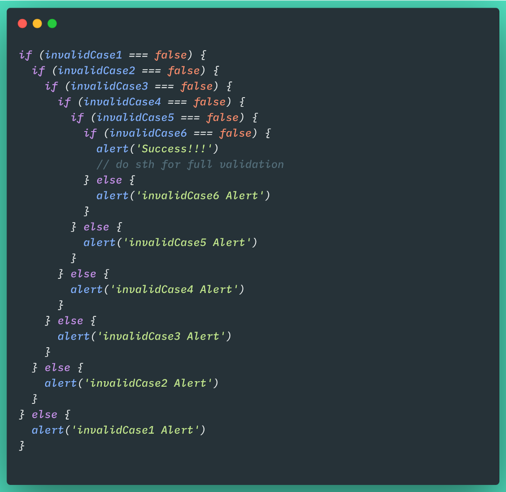
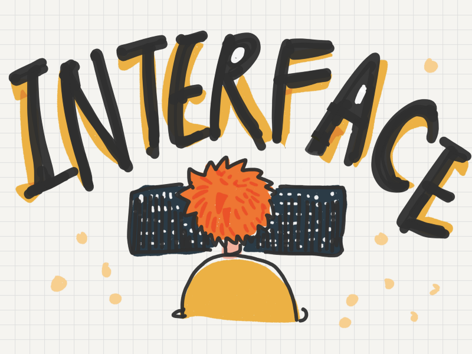

文章
11
標籤
4
分類
4
分類
歸檔
Chan-Chan-Dev
分類
歸檔
categories
分類 -
4
Coding
11
Design-Pattern
4
Python
5
如果早知道
1
chan-chan-dev
Coding x Reading x Painting
文章
11
標籤
4
分類
4
最新文章

儘早 Return 函數：讓 if 邏輯條件判斷不再一層又一層！
2021-03-05
Strategy 設計模式
2021-03-04
Bridge 設計模式
2020-08-30

小故事圖解物件導向的 interface 是什麼？為什麼要 interface？什麼時候要 interface？
2020-08-13
Single Responsibility Principle（單一職責）
2020-07-05
分類
Coding
11
Design-Pattern
4
Python
5
如果早知道
1
標籤
Design-Pattern
Python
小技巧
設計模式
歸檔
三月 2021
2
八月 2020
2
七月 2020
1
四月 2020
6
網站資訊
文章數目 :
11
本站總字數 :
19.2k
本站訪客數 :
本站總訪問量 :
最後更新時間 :